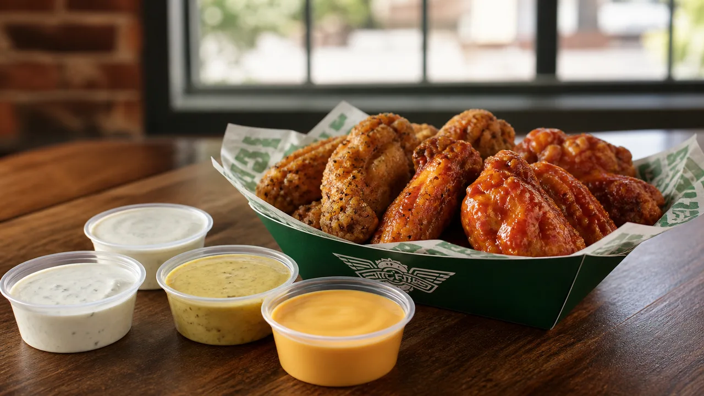

Compare Wingstop ranch, bleu cheese, honey mustard and cheese sauce, with pairing, portion, nutrition, allergen and ordering tips.

Ranch, bleu cheese, honey mustard and cheese sauce served beside wings
Wingstop dips are served on the side; wing flavors are tossed or seasoned onto the chicken. That distinction matters when you compare taste, calories, allergens, and how much control you want over each bite.
Common choices include House Made Ranch, bleu cheese, honey mustard, and cheese sauce. Size and availability can change by store, and some meals include a set number of dips.
| Dip | Taste | Useful pairing |
|---|---|---|
| Ranch | Cool, creamy, herby | Hot wings, tenders, fries |
| Bleu cheese | Tangy, savory | Buffalo-style flavors |
| Honey mustard | Sweet, tangy | Tenders |
| Cheese sauce | Rich, salty | Seasoned fries |
A dip stays in its own cup, so you control the amount. A wing flavor coats or seasons the chicken. Ordering a dip does not replace the selected wing flavor unless the store’s customization flow explicitly says so.
Creamy dips can add a meaningful amount to an order’s calorie and allergen profile. Count the portion you actually use, not simply the number of cups delivered.
Ranch, bleu cheese, honey mustard, and cheese sauce may contain major allergens. Review the current allergen guide and ask the restaurant about cross-contact when an allergy affects your order.
No. Ranch is a side dip; wing flavors are tossed or seasoned onto the chicken.
Many wing and tender orders include one or more dips, but the count depends on the item and size.
Yes, extra dips are commonly available as paid add-ons in the ordering menu.